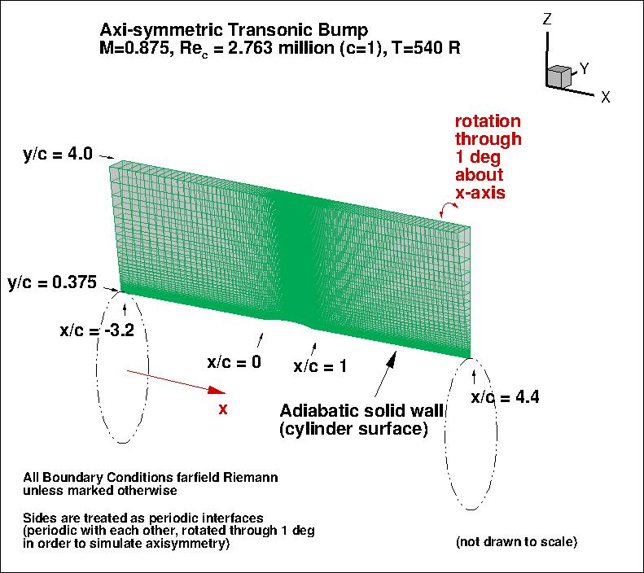
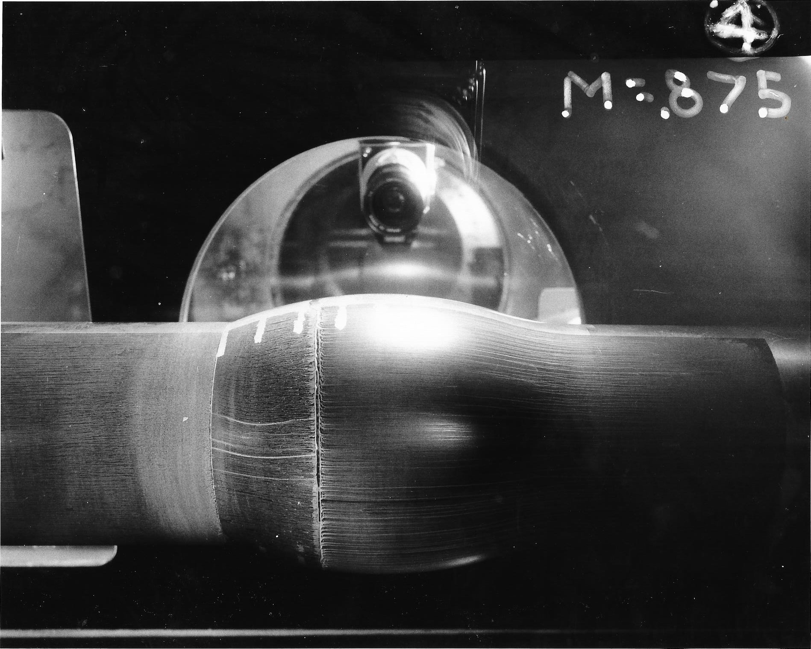
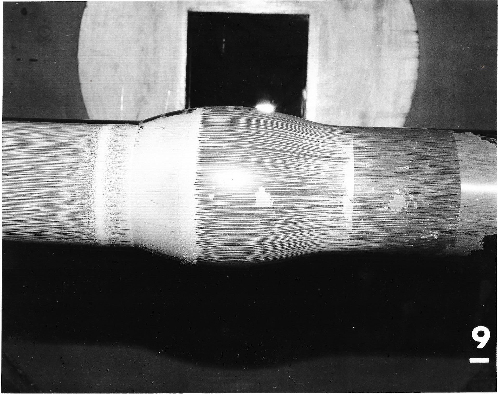
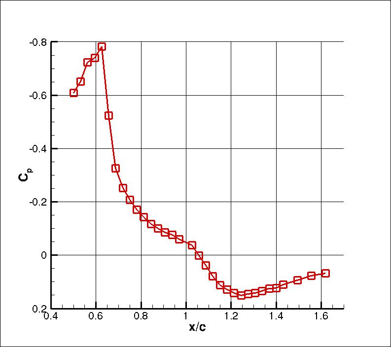
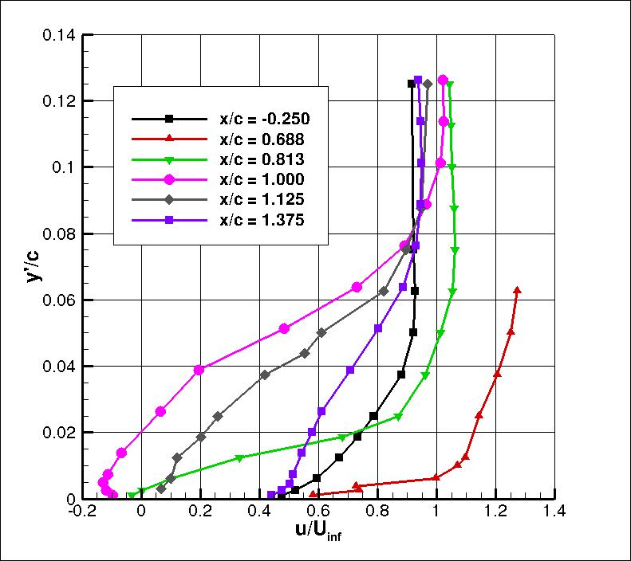
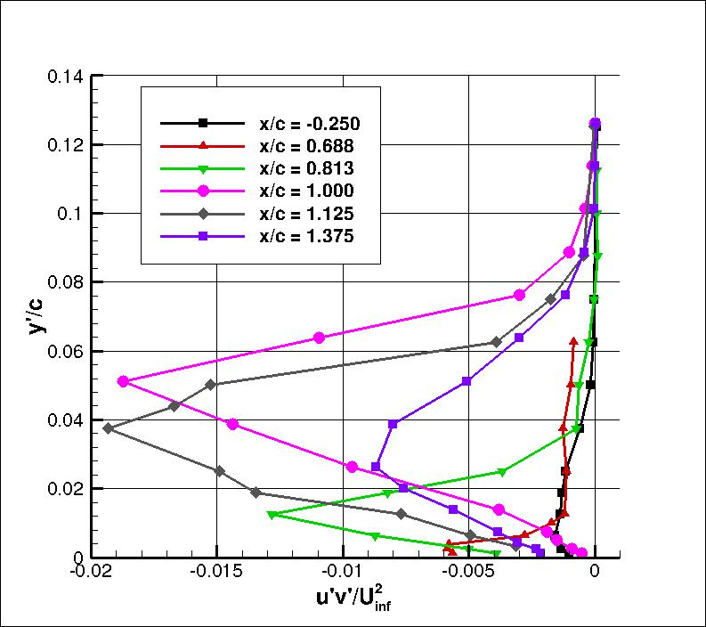

|
Langley Research CenterTurbulence Modeling Resource |
Return to: Turbulence Modeling Resource Home Page
ATB: Axisymmetric Transonic Bump
The purpose here is to provide a
validation case for turbulence models. Unlike verification, which seeks to
establish that a model has been implemented correctly, validation compares
CFD results against data in an effort to establish a model's ability to
reproduce physics. A large sequence of nested grids of the same family are
provided here if desired. Data are also provided for comparison. For this
axisymmetric transonic bump case,
the data is from experiment (Bachalo, W. D. and Johnson D. A., "An Investigation of
Transonic Turbulent Boundary Layer Separation Generated on an Axisymmetric Flow Model,"
AIAA Paper 79-1479,
https://doi.org/10.2514/6.1979-1479 and
the primary reference:
Bachalo, W. D. and Johnson, D. A., "Transonic, Turbulent Boundary-Layer Separation
Generated on an Axisymmetric Flow Model," AIAA Journal, Vol. 24, No. 3, 1986, pp. 437-443,
https://doi.org/10.2514/3.9286).
The experiment utilized a circular-arc bump with a height of 1.905 cm and a
length of 20.32 cm attached to a thin-walled cylinder of 15.24 cm diameter. The experiment
was performed in the NASA-Ames, 2ft x 2ft transonic wind tunnel (a closed return,
variable density, continuous-running tunnel with 21% open porous-slotted
upper and lower walls). The boundary layer incident on the bump was approximately
1 cm thick. In the experimental case with Mach number of 0.875, the combination
of shock and trailing-edge adverse gradient caused flow separation. The flow
subsequently reattached downstream of the bump.
It is important to note that this axisymmetric case is not a 2-D computation; it uses a
periodic (rotated) grid system with appropriate boundary conditions on the periodic sides of the grid.
Also, the current BCs for this CFD case assume basically an unconstrained "freestream-type"
boundary using a Riemann invariant BC (similar to
the way this case was computed back in the 1990s). This is very different from the wind tunnel
experiment itself (see below). However, the results are still considered representative.
With the goal of obtaining more extensive flow field data at a lower chord Re number and
measurements of skin friction, experiments were conducted at the Sandia National Laboratories,
Albuquerque, New Mexico as described in "Experimental Characterization of an Axisymmetric Transonic
Separated Flow for Computational Fluid Dynamics Validation" by Lynch et al. (AIAA Journal,
Vol. 61, No. 4, 2023, pp. 1623-1638,
https://doi.org/10.2514/1.J062278).
An available download of the experimental data can be found on the TMR website at:
Exp: Sandia Axisymmetric Transonic Bump (revisiting Bachalo-Johnson).

This axisymmetric bump was also tested in a solid-wall 6ft x 6ft tunnel (see AIAA Journal 22(7),1984:1001-1003,
https://doi.org/10.2514/3.48539,
AIAA Paper 85-1683,
https://doi.org/10.2514/6.1985-1683,
and AIAA Journal 25(2),1987:252-259,
https://doi.org/10.2514/3.9615.
Only surface pressure data and separation/reattachment locations as determined from oil-flow
visualizations were obtained in this larger wind tunnel.
Surface pressures obtained at the same reported freestream Mach number of
M = 0.875 (fig.1, AIAA J. 25(2)1987:252-259 and fig.2 AIAA Paper 85-1683)
showed only small differences from results in the 2ft x 2ft tunnel. However, in AIAA Paper 85-1683, it was noted that
the shock location was 0.01 to 0.015 chord forward in the larger wind tunnel at all supercritical
conditions. Also, at the reported condition of M = 0.875 in the larger tunnel,
separation occurred at x/c approx 0.69 and reattachment at x/c approx 1.17, as compared
to x/c approx 0.7 and x/c approx 1.1 as reported by Bachalo and Johnson.
WRLES solutions have been obtained for this flow by Uzun and Malik, AIAA Journal, Vol. 57, No. 5, 2019, pp. 1955-1972,
https://doi.org/10.2514/1.J057850.
(See also the TMR page:
LES: Compressible Axisymmetric Transonic Separated Bump.)
In the calculations, characteristic (freestream) boundary conditions were applied at y/c = 10.
Below are two oil flow photographs from the experiment at M=0.875 (courtesy
Dennis Johnson). The first is from the 2ft x 2ft tunnel and the second is
from the 6ft x 6ft tunnel. Flow is from right to left.


Some of the experimental data for this case are shown below
(all of it is from the 2ft x 2ft tunnel test).
Velocity and turbulence profiles of interest are chosen at the following x/c locations:
x/c=-0.25, 0.688, 0.813, 1.000,
1.125, and 1.375. (The profile at x/c=0.688 is near the shock location.)
The u and v velocity components are parallel and normal to the model axis, respectively.
Note that for the Transonic Bump data, the coordinate normal to the model axis, y'/c,
is defined such that y'/c=0 on the cylinder surface.
As mentioned above, the primary experimental data reference is: Bachalo, W. D. and Johnson, D. A.,
"Transonic, Turbulent Boundary-Layer Separation Generated on an Axisymmetric Flow Model,"
AIAA Journal, Vol. 24, No. 3, 1986, pp. 437-443,
https://doi.org/10.2514/3.9286.
Note that the model was designed and built under the English measurement system:
c = 8 inches, t = 3/4 inches, and d = 6 inches.
AIAA insisted on conversion to metric dimensions and unfortunately, the conversions were rounded
in the journal article.
The shape the bump is a circular arc with length 20.32 cm and height
1.905 cm
above the cylinder radius. There is a leading edge fillet. For the current grids,
the shape of the fillet was taken from graphically-defined
estimations used in previous studies, because the radius
definition given in Bachalo and Johnson does not lead to tangential intersections on both surfaces as
described. However, the leading edge fillet radius was believed to be
somewhere in the range of 18.3 cm to 20.32 cm, with
the references listing the former number. Although there was no fillet at the trailing edge of
the bump in the experiment, the current body definition
applies a very small fillet at the trailing edge between the bump and the cylinder.
This additional T.E. fillet was included in previous computations from several decades ago, and was
left in place here for the time being. CFD tests conducted at NTS (Russia) both with and without the small T.E. fillet
indicate minimal effect.
A list of points (defining the bump shape used in the current grids and computations provided here) is given as
bumpgrd.surfpts_orig.dat.
An older version of the experimental data is available on this site from:
These data and the present data have been corrected for velocity biasing as suggested by McLaughlin and Teiderman
(reference given in the Case F-8611 description). Freestream turbulence level approx 0.6%, AIAA Paper 81-0156,
https://doi.org/10.2514/6.1981-156.



The experimental data used are provided here:
Additional experimental data:
Dennis Johnson (NASA Ames, retired) is gratefully acknowledged for providing additional detailed
information for this case.
What to Expect:
(Other turbulence model results may be added in the future.)
Note that the OVERFLOW code has documented its results for this validation case (for the SA-noft2 and SST
turbulence models) in NAS Technical Paper 2016-01 (pdf file)
(18.3 MB) by Jespersen, Pulliam, and Childs.
Return to: Turbulence Modeling Resource Home Page
Recent significant updates: Responsible NASA Official:
Ethan Vogel
Note that the point connecting lines have been added for plot clarity.
RESULTS
LINK TO EQUATIONS
MRR Level
SA
SA eqns
4
SA-RC
SA-RC eqns
3
SSTm
SSTm eqns
3
SST-2003m
SST-2003m eqns
2
SST-RCm
SST-RCm eqns
2
BSLm
BSLm eqns
2
SSG/LRR-RSM-w2012
SSG/LRR-RSM-w2012 eqns
3
Wilcox2006-klim-m
Wilcox2006-klim-m eqns
2
K-kL-MEAH2015m
K-kL-MEAH2015m eqns
3
09/03/2024 - some clarifications made to the wording
07/15/2022 - added statement regarding newer Sandia test case, including link to its EXP page
11/17/2017 - modified wording for clarity, added oil flow photos
07/08/2016 - added link to SST-RC results
03/25/2016 - added "Axi_Bump - all data profiles"
01/13/2016 - added link to SA-RC results
02/19/2015 - added bump surface points used to create current grids
Page Curator:
Clark Pederson
Last Updated: 09/03/2024